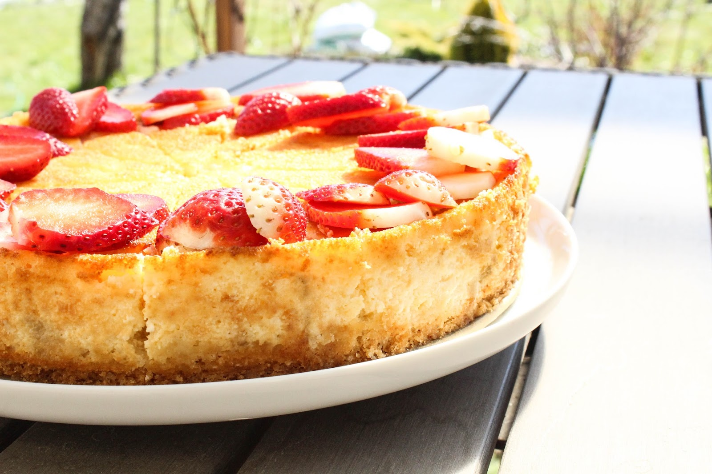

Kohupiimakook

Koostisosad
| Koostisosa |
Kogus |
| Kohupiim |
500g |
| Muna |
3 tk |
| Suhkur |
150g |
| Hapukoor |
200g |
| Jahu |
100g |
| Või |
100g |
| Vanillisuhkur |
1 tl |
Valmistamine
- Kuumuta ahi 180 kraadini.
- Sega omavahel kohupiim, munad, suhkur ja vanillisuhkur.
- Lisa hapukoor ja sega ühtlaseks.
- Sega juurde jahu ja sulatatud või.
- Vala segu küpsetuspaberiga kaetud vormi.
- Küpseta kooki ahjus 45-50 minutit, kuni see on pealt kuldpruun.
- Lase koogil jahtuda ja serveeri.
Retsepti allikas: Taste of Home